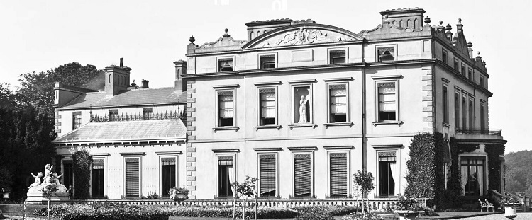
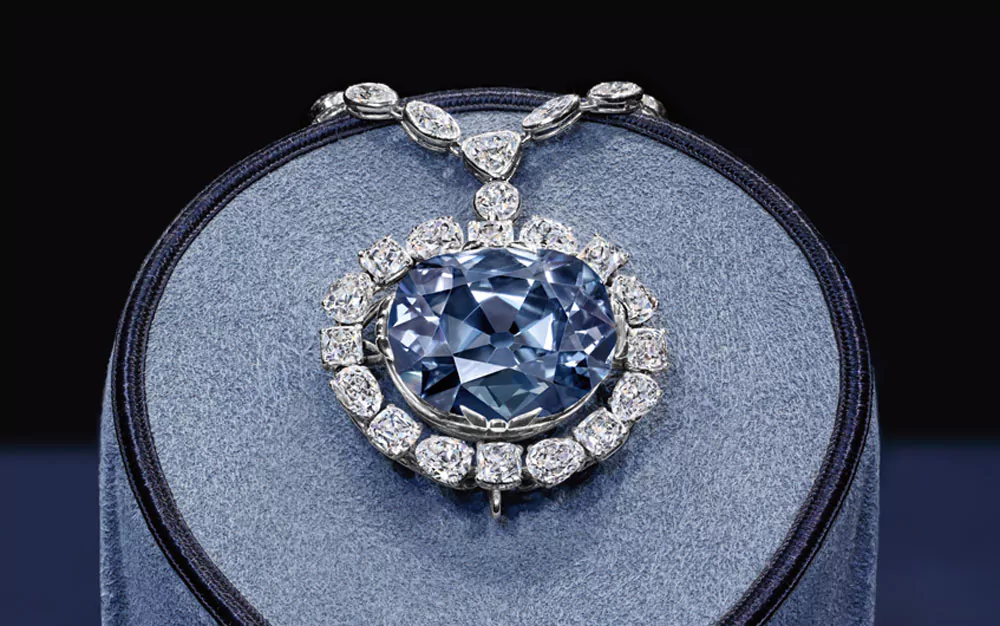

History
Hope Castle, also known as Blayney Castle, is an 18th century building located in Castleblayney, Co. Monaghan. Over the years, Hope Castle has been used for various uses, such as home to many families, military barracks, a hospital, convent, and most recently used as a hotel before 2010.
The land on which Hope Castle was built was originally under the ownership of Sir Edward Blayney, he recieved it in 1607. Blayney was a Welsh soldier who was granted land at Ballynalurgan and Muckno, where he built a stone defensive castle, Blayney Castle. The town of Castleblayney has grown around that original site. Blayney was the first Baron Blayney in 1621 and the Blayneys would continue to occupy the estate until after the 1830s. At the time of the second baron in 1641 the castle was captured by rebels fighting under Hugh Mac Patrick Dubh MacMahon. The baron escaped but his wife and children were captured.

The 7th Baron Blayney sold off part of the land in 1723. It was not until the 1780s that the present building, named Blayney Castle, was constructed near the old Elizabethan castle for Lieutenant General The 11th Baron Blayney, a famous soldier who owned the land from 1784 to 1834.
The 12th and last Lord Blayney sold his entire estate to the wealthy Henry Thomas Hope in 1853. Henry Hope improved the castle and its surounding area. The name Hope still brings fame to the castle, not because of any deed that Henry did in the area but because of the famous jewel called "Hope Diamond".
The Castle was occupied by the Duke of Connaught son of Queen Victoria from 1900 - 1904. The Castle served as a temporary county hospital from 1932 - 1937.
Timeline
- 1607 - Sir Edward Blayney
- 1784 - Andrew Thomas Blayney
- 1853 - Henry Thomas Hope
- 1900 - Duke of Connaught
- 1919-1921 - Military Barracks
- 1932-1937 - Monaghan County Hospital
- 1942-1970s - Franciscan Order Convent
- 1980-Present - County Council